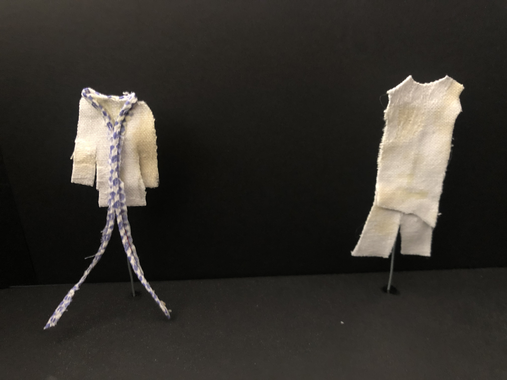

Foi escolhida a cor azul por estar associada à paz, à ordem e à harmonia. A marca pensou que seria uma boa mensagem para passar e forma de manifesto para os tempos atuais.
A Avaria procura destacar-se através da sua diferença para alcançar pessoas diferentes.
Estes artigos são pensados para elas, que não procuram agradar a mais ninguém a não elas próprias.
Abraçando e assumindo o formato genderless e sem barreiras culturais, a coleção tem o objetivo mostrar que o imperfeito, o desgastado, o manchado e desconstruído pode ser tansformado em algo com significado, adorado e fashionable.
